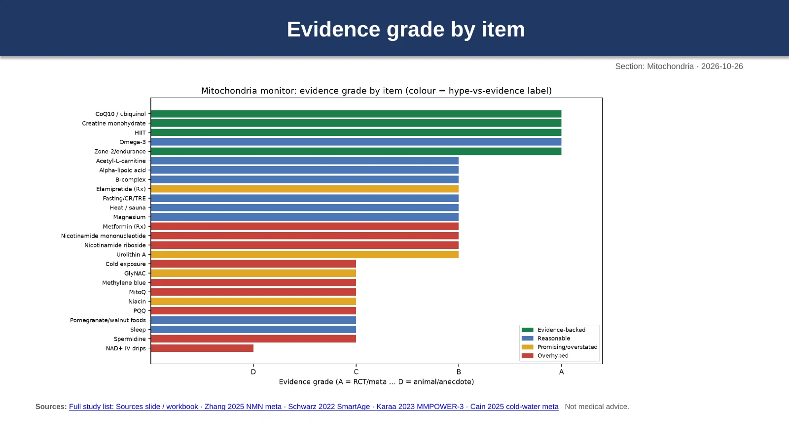
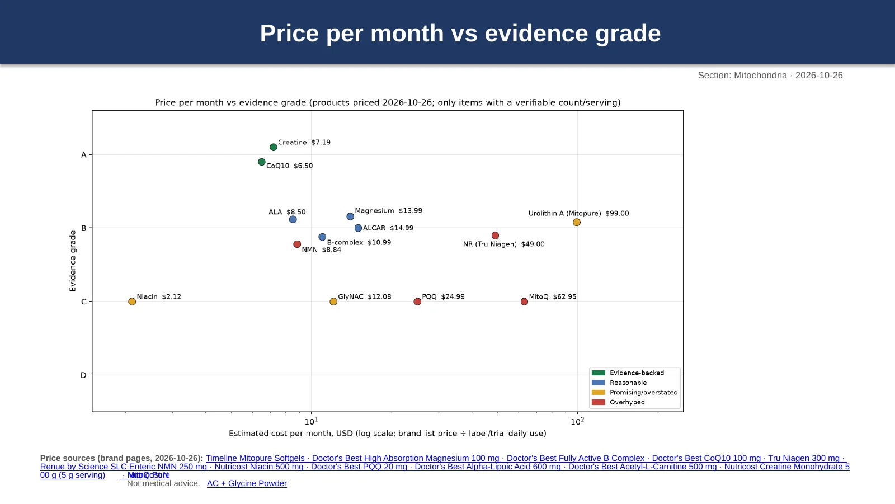
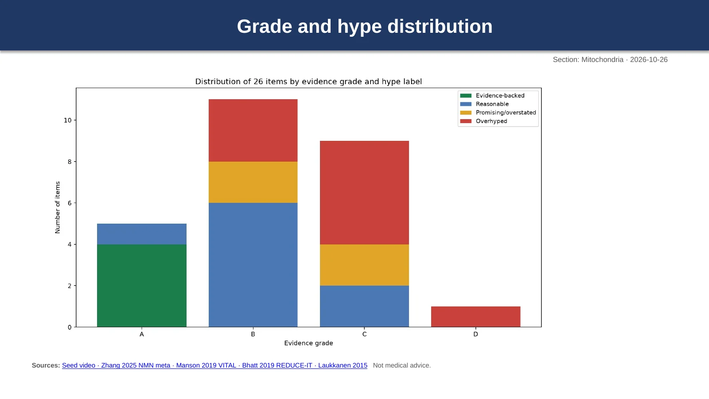

Mitochondria

From the Longevity Health Supplements Guide, slide 4.
Sources: https://www.youtube.com/watch?v=UHHBUqvpNN4 https://pubmed.ncbi.nlm.nih.gov/39116016/ https://pubmed.ncbi.nlm.nih.gov/35616942/ https://pubmed.ncbi.nlm.nih.gov/37268435/ https://pubmed.ncbi.nlm.nih.gov/39879231/

From the Longevity Health Supplements Guide, slide 5.
Sources: https://www.timeline.com/products/mitopure-softgels-vegan https://www.doctorsbest.com/products/doctor-s-best-high-absorption-magnesium-lysinate-glycinate-chelated-albion-traacs-120-tablets-100-mg-per-tablet-15 https://www.doctorsbest.com/products/doctor-s-best-fully-active-b-complex-with-quatrefolic-30-veggie-caps-50940 https://www.doctorsbest.com/products/doctor-s-best-high-absorption-coq10-100-mg-60-veggie-caps-20 https://www.truniagen.com/products/tru-niagen-300mg https://renuebyscience.com/products/slc-enteric-nmn-nicotinamide-mononucleotide-delayed-release-250mg-200ct https://nutricost.com/products/nutricost-vitamin-b3-niacin-capsules https://www.doctorsbest.com/products/doctor-s-best-pqq-20-mg-30-veggie-caps-49081 https://www.doctorsbest.com/products/doctor-s-best-alpha-lipoic-acid-600-600-mg-60-veggie-caps-2475 https://www.doctorsbest.com/products/doctor-s-best-acetyl-l-carnitine-60-veggie-caps-500-mg-per-capsule-28 https://nutricost.com/products/nutricost-creatine-monohydrate-powder-500-grams https://www.mitoq.com/products/mitoq-pure https://nutricost.com/products/nutricost-nac-glycine-powder

From the Longevity Health Supplements Guide, slide 6.
Sources: https://www.youtube.com/watch?v=UHHBUqvpNN4 https://pubmed.ncbi.nlm.nih.gov/39116016/ https://pubmed.ncbi.nlm.nih.gov/30415637/ https://pubmed.ncbi.nlm.nih.gov/30415628/ https://pubmed.ncbi.nlm.nih.gov/25705824/